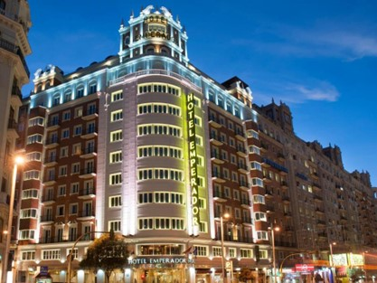

Plan putovanja Madrid:
DAN 1 - KRALJEVSKA PALATA (PALACIO REAL)
Kraljevska palata u Madridu pleni svojom raskošnom arhitekturom i značajnom istorijskom pozadinom. Njena gradnja, započeta 1735. godine, svedoči o bogatoj prošlosti španske monarhije. Sa svojih 3.400 soba i impozantnih 1,4 miliona kvadratnih metara, ova palata je među najvećima u zapadnoj Evropi. Posetiocima se pruža prilika da istraže unutrašnjost ovog grandioznog zdanja, gde monumentalni svodovi, umetničke slike i drvene rezbarije svedoče o raskoši španskog nasleđa.
DAN 2 - MUZEJ PRADO
Muzej Nacional del Prado u Madridu predstavlja dragocenu riznicu umetničkog nasleđa i jedno je od najposećenijih muzeja na svetu. Ovaj muzej, otvoren 1819. godine, čuva više od 20.000 remek-dela, čineći ga neprocenjivim kulturnim blagom. Sadrži raznovrsnu kolekciju dela španskih majstora poput El Greka, Velázqueza i Goje, flamanskih i holandskih umetnika, među kojima su Rubens, van Dajk i Breugel. Italijanski majstori, uključujući Botičelija, Tintoretta, Ticiana, Karavađa i Veronezea, takođe su zastupljeni, kao i nemački umetnici Direr, Kranach i Baldung Grien.
DAN 3 - SANTIAGO BERNABEU I WANDA METROPOLITANO

Stadion Santijago Bernabeu (šp. Estadio Santiago Bernabéu) je fudbalski stadion u Španiji i smešten je u glavnom gradu Španije, Madridu. Domaćin stadiona je poznati evropski klub Real Madrid. Stadion Santijago Bernabeu je napravljen pri kraju Drugog svetskog rata i otvoren je 14. decembra 1947. pod imenom Stadion Šamartin. Kapacitet stadiona je 80354 gledalaca. Stadion je 14. decembra 1957. promenio ime i od tada se naziva Santijago Bernabeu po dugogodišnjem predsedniku Real Madrida.

Metropolitano Stadion (poznat i kao Vanda Metropolitano zbog sponzorskih razloga) nalazi se u Madridu, u Španiji. To je domaći stadion Atletiko Madrida od sezone 2017/18. Nalazi se u naselju Rosas u četvrti San Blas-Kanilejas. Stadion je izgrađen kao deo neuspele ponude Madrida za domaćina Svetskog prvenstva u atletici 1997. godine, a otvoren je 6. septembra 1994. godine i vlasništvo je zajednice Madrida. Godine 2013. prešao je u posed Atletiko Madrida, koji je tu odigrao svoju prvu utakmicu 16. septembra 2017. godine. Stadion ima kapacitet od 67.829 mesta. Bio je domaćin finala Lige Šampiona 2019. godine.
REZERVACIJA PUTOVANJA

Avio aranžman:
Autobus aranžman:
Izvršite rezervaciju